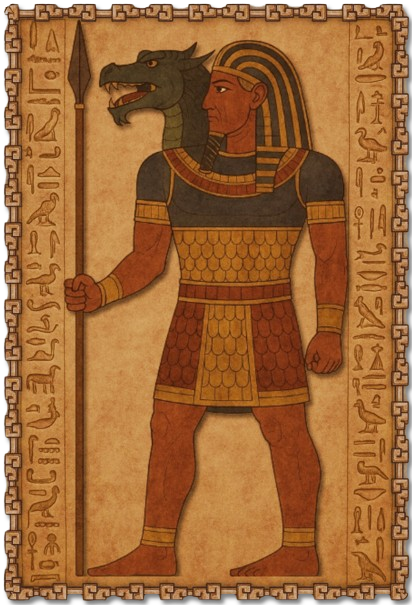

II · Glaubensgemeinschaft Archivblatt 06
Die Hohen Drei
Die drei Göttlichen
Osiran, Isiriel und Sethran vereinen die göttlichen Wesenszüge in drei Gestalten. Der alte Glaube Tirnaras unterscheidet ihre Verehrung von der Beschwichtigung der Nebengötter.

Gestalten dieser Überlieferung
Götterkreis & Gestalten
Die Namen, Bildnisse und Aspektzuordnungen dieser Glaubensrichtung. Verweise führen zu den entsprechenden Überlieferungen im Glaubenscodex.
Die Hohen Drei
03Die Nebengötter
14Diese Spur verliert sich im Archiv.
Zu dieser Suche wurde kein Eintrag gefunden. Versucht einen anderen Namen oder öffnet wieder alle Kapitel.
Einführung
Die Religion der Hohen Drei ist eine uralte Glaubensrichtung, die ihre Wurzeln in Tirnara hat. Sie existierte bereits vor der Reform des Alten Pantheons , die zur Entstehung der Alerischen Kirche und des Alerischen Kaiserreiches führte. Die Religion der Hohen Drei stellt selbst eine Reform des alten Druiden-Pantheons dar, das einst den südlichen Kontinent dominierte. Trotz späterer religiöser Entwicklungen und der Einführung der Neun Göttlichen, konnte sich die Religion der Hohen Drei als die vorherrschende Glaubensrichtung behaupten.
Diese Religion verehrt drei Hauptgötter, die jeweils zentrale Aspekte des Lebens und des Universums verkörpern. Die Verehrung dieser Götter ist tief in den kulturellen Praktiken und Ritualen der Menschen des südlichen Kontinents verankert. Ihre Geschichten und Lehren sind eng mit der Natur und den Zyklen der Welt verbunden, was die enge Beziehung der Religion zu den alten Druidenwurzeln unterstreicht.
Hintergrund
Die Religion der Hohen Drei entwickelte sich aus dem Bedürfnis heraus, die Götter des alten Pantheons für die Menschen des Südens greifbarer und verständlicher zu machen. Diese Menschen hatten Schwierigkeiten, die abstrakten und vielfältigen Gottheiten des ursprünglichen Druiden-Pantheons zu verehren und zu verstehen. Um dem entgegenzuwirken, fasste man die Totemgötter der Druiden (wie den Wolf, den Bären, den Drachen etc.) in drei zentrale göttliche Wesen zusammen, die als die Hohen Drei bekannt wurden.
Diese Reform des Pantheons brachte nicht nur eine Vereinfachung der Verehrung, sondern auch eine klarere Struktur in die religiösen Praktiken der südlichen Völker. Die Hohen Drei verkörperten die wichtigsten Aspekte des Lebens und der Natur, während andere, weniger bedeutende Gottheiten als Nebengötter hinzukamen. Diese Nebengötter, oft als infernal angesehen, wurden nicht direkt verehrt, sondern eher gefürchtet und respektiert. Man brachte ihnen Opfergaben dar, um ihr Unheil abzuwenden oder sie zu besänftigen. Ein Beispiel dafür ist der Gott Zethnar, den man mied, aber durch Opfergaben besänftigte. Auf der anderen Seite stand Zat-rahotep, der ohne Bedenken verehrt werden konnte.
Im Laufe der Zeit entstand die Alerische Kirche, die eine klarere und deutliche Interpretation des alten Pantheons der Druiden darstellte. Diese neue religiöse Bewegung setzte sich allmählich durch, brachte jedoch keine sofortige Ablösung der Religion der Hohen Drei mit sich. Die alte Religion blieb weiterhin stark im Süden verankert, auch wenn die Alerische Kirche ihren Einfluss ausweitete.
Diese Dynamik zwischen der alten Religion der Hohen Drei und der neueren Alerischen Kirche spiegelt die evolutionäre Entwicklung religiöser Praktiken und die Anpassung der Glaubenssysteme an die Bedürfnisse und das Verständnis der Gläubigen wider.
Hierarchie
In der Religion der Hohen Drei spielt das Pantheon eine zentrale Rolle, das in einer klaren Hierarchie organisiert ist. An der Spitze stehen die drei Hauptgötter, die als die Hohen Drei bekannt sind und die höchsten Aspekte der Göttlichkeit verkörpern:
- Osiran, der Wächter
Osiran ist der Gott des Schutzes und der Ordnung. Er wird als der Hüter der göttlichen Gesetze und der Beschützer der Gläubigen verehrt. Seine Präsenz symbolisiert Sicherheit, Stabilität und Gerechtigkeit. Osiran wird oft mit einem Schild oder einer Rüstung dargestellt, die seine Rolle als Verteidiger und Bewahrer unterstreichen.
- Isiriel, die Muse
Isiriel ist die Göttin der Inspiration, der Kreativität und der Liebe. Sie ist die Quelle künstlerischer und schöpferischer Kräfte und wird von Künstlern, Musikern und Dichtern verehrt. Isiriel verkörpert die Schönheit und Harmonie der Welt, die sie durch ihre göttliche Inspiration den Menschen offenbart.
- Sethran, der Seher
Sethran ist der Gott der Weisheit, der Erkenntnis und der Vorsehung. Er wird als allwissend und weitsichtig angesehen, fähig, in die Zukunft zu blicken und den Gläubigen Weisheit und Einsicht zu schenken. Sethran steht für die Suche nach Wissen und die Offenbarung verborgener Wahrheiten.
Diese Hauptgötter verkörpern ultimativ nur positive Aspekte und Eigenschaften und werden von den Gläubigen als perfekte und wohlwollende Wesen verehrt. Sie stehen für die höchsten Ideale und Werte der Religion der Hohen Drei.
Die Nebengötter
Neben den Hohen Drei existiert eine Vielzahl von Nebengöttern, die eine breitere Palette von Aspekten verkörpern, darunter auch bösartige oder trickreiche Eigenschaften. Diese Nebengötter werden in der Religion der Hohen Drei nicht ignoriert oder verachtet, sondern als unvermeidliche Prüfsteine und Hürden betrachtet, die im Leben der Gläubigen eine wichtige Rolle spielen.
Die Nebengötter lassen sich in drei Kategorien einteilen:
- Die Verpönten
Diese Götter verkörpern negative oder destruktive Kräfte, die oft gemieden werden. Ein Beispiel hierfür ist Dagoth, ein Gott, der mit Chaos und Unglück assoziiert wird. Obwohl er gefürchtet wird, bringen die Gläubigen ihm Opfergaben dar, um sein Unheil abzuwehren oder ihn zu besänftigen.
- Die Akzeptierten
Diese Nebengötter haben sowohl positive als auch negative Eigenschaften und werden in bestimmten Kontexten verehrt. Zat-rahotep ist ein solcher Gott, der für Mut und Fairniss steht und in schwierigen Situationen angerufen wird, um Hindernisse zu überwinden.
- Die Gefürchtet
Diese Götter sind zwar mächtig, werden jedoch mit größter Vorsicht behandelt. Sie werden nicht direkt verehrt, sondern ihre Existenz wird anerkannt, um ihre bösartigen Einflüsse abzuwenden.
Die Gläubigen sehen diese Nebengötter als Herausforderungen, die es zu meistern gilt, sei es durch Überwindung, List oder durch ein strategisches Arrangement mit ihnen. Die Verehrung der Nebengötter, insbesondere der bösartigen, dient als Anerkennung der Tatsache, dass das Leben voller Prüfungen ist und dass diese Herausforderungen als Teil des göttlichen Plans verstanden werden müssen.
Insgesamt reflektiert das Pantheon der Hohen Drei eine tiefe Einsicht in die dualistische Natur der Existenz, in der sowohl das Gute als auch das Böse eine notwendige Rolle im kosmischen Gleichgewicht spielen. Diese Religion bietet den Gläubigen eine umfassende spirituelle Orientierung, die sowohl die erhabenen als auch die dunkleren Seiten des Lebens umfasst.
Die Souveräne, Geweihte & Gefallene
Die Fünf Souveräne nehmen in der Religion der Hohen Drei eine besondere Stellung ein. Sie werden als fleischgewordene Götter betrachtet, die in der Welt manifestiert sind und sowohl verehrt als auch gefürchtet werden. Diese Souveräne, die als die Fünf Souveräne bekannt sind, verkörpern Aspekte der Göttlichkeit in ihrer menschlichsten und unmittelbarsten Form.
Gefallene : Diese Wesen waren einst Teil der göttlichen Ordnung, haben jedoch ihren Status durch ihre Handlungen oder Entscheidungen verloren. Sie werden oft mit Tragik und Macht assoziiert, da sie sowohl göttliche als auch sterbliche Qualitäten in sich tragen. Ihre Anwesenheit in der Welt ist selten, doch wenn sie sich manifestieren, bringen sie sowohl Herausforderungen als auch Möglichkeiten mit sich. Die Gläubigen fürchten die Gefallenen, respektieren aber ihre Macht und huldigen ihnen, um Unheil abzuwenden.
Geweihte : Im Gegensatz zu den Gefallenen sind die Geweihten Wesen, die durch göttliche Gnade auserwählt wurden, einen bestimmten Aspekt der Göttlichkeit zu verkörpern. Sie werden als lebende Verkörperungen des göttlichen Willens betrachtet und erscheinen nur in Zeiten großer Not oder göttlicher Intervention. Die Gläubigen verehren die Geweihten, sehen sie jedoch als ferne, unerreichbare Figuren an, die nur selten direkt in das Leben der Menschen eingreifen.
Relevanz für die Gläubigen
Obwohl die Fünf Souveräne eine bedeutende symbolische Rolle in der Religion der Hohen Drei spielen, haben sie im alltäglichen Leben der Gläubigen wenig direkte Relevanz. Ihre Präsenz ist selten und oft nur in außergewöhnlichen Umständen spürbar. Die Anhänger dieser Religion widmen ihre Verehrung hauptsächlich den Hohen Drei und den Nebengöttern, die in ihrem täglichen Leben eine greifbarere Rolle spielen.
Dennoch, wenn die Fünf Souveräne in das Leben der Gläubigen treten, sei es durch Visionen, Zeichen oder direkte Manifestationen, reagieren die Gläubigen mit großer Ehrfurcht und Respekt. Sie wissen, dass diese Begegnungen seltene und bedeutsame Ereignisse sind, die tiefe spirituelle Implikationen haben. In solchen Momenten wird den Souveränen gehuldigt, um ihre Gunst zu gewinnen oder ihre Macht zu respektieren, wobei die Gläubigen darauf achten, die richtigen Riten und Zeremonien zu vollziehen, um die Souveränen zu ehren oder zu besänftigen.
Die Fünf Souveräne, ob Gefallene oder Geweihte, verkörpern in der Religion der Hohen Drei die Verbindung zwischen der göttlichen Sphäre und der sterblichen Welt. Ihre seltene, aber mächtige Präsenz dient als Erinnerung an die tiefere, mystische Natur der Welt und die Komplexität der göttlichen Ordnung. Obwohl sie im Alltag der Gläubigen keine zentrale Rolle spielen, werden sie bei ihrem Erscheinen mit tiefem Respekt und Ehrfurcht behandelt, was ihre außergewöhnliche Bedeutung in der religiösen Struktur unterstreicht.
Unterschiede
Göttliche und Infernale
Die Religion der Hohen Drei und die Alerische Kirche repräsentieren zwei unterschiedliche Ansätze im Umgang mit göttlichen und infernalen Kräften, die tief in der spirituellen Landschaft ihrer jeweiligen Kulturen verwurzelt sind. Beide Religionen erkennen die Existenz mächtiger göttlicher Wesen und ihrer dunklen Gegenstücke an, jedoch unterscheiden sie sich stark in ihrer Interpretation, Verehrung und dem Umgang mit diesen Kräften.
Die Alerische Kirche basiert auf einer strikten Trennung zwischen den Neun Göttlichen und den Neun Infernalen . Die Neun Göttlichen verkörpern das höchste Gute und repräsentieren insgesamt 27 Tugenden, wie Gerechtigkeit, Weisheit und Barmherzigkeit. Diese Tugenden dienen den Gläubigen als moralischer Kompass und Leitfaden für ein tugendhaftes Leben. Die Neun Infernalen hingegen stehen für das völlige Gegenteil dieser Tugenden, verkörpern Übertretungen wie Verrat, Grausamkeit und Ignoranz und gelten in der Alerischen Kirche als Verkörperungen des Bösen. Diese infernalen Wesen werden strikt abgelehnt und ihre Verehrung wird als Blasphemie betrachtet, was in den Ländern der Alerischen Kirche streng geahndet wird.
Interpretation
Die Religion der Hohen Drei hingegen fasst die Neun Göttlichen zu drei zentralen Hauptgöttern zusammen: Osiran, der Wächter, Isiriel, die Muse und Sethran, der Seher. Diese drei Götter verkörpern die höchsten Aspekte des Göttlichen und werden als wohlwollende und schützende Wesen verehrt. Im Gegensatz zur Alerischen Kirche integriert die Religion der Hohen Drei die Neun Infernalen auf eine wesentlich ambivalentere Weise. Die Infernalen werden hier nicht als rein bösartige Dämonen gesehen, sondern als Prüfsteine und Herausforderungen, die im Leben der Gläubigen eine wichtige Rolle spielen. Während einige der Infernalen gemieden werden, weil sie Unglück und Chaos bringen, werden andere mit Respekt behandelt oder sogar verehrt, um ihre Macht zu besänftigen oder für eigene Zwecke nutzbar zu machen. Dieser pragmatische Umgang mit dem Infernalen spiegelt eine flexiblere und integrativere Weltanschauung wider, die das Leben als einen ständigen Balanceakt zwischen Gut und Böse betrachtet.
Toleranz
Trotz der tiefgreifenden Unterschiede zwischen den beiden Religionen existiert eine Form von Koexistenz. Die Alerische Kirche und die Religion der Hohen Drei tolerieren einander, auch wenn die Alerische Kirche klare Grenzen setzt, die in ihren Territorien nicht überschritten werden dürfen. Blasphemie, insbesondere die Verehrung der Infernalen, wird in Gebieten unter der Herrschaft der Alerischen Kirche streng bestraft. In den Ländern, die von der Religion der Hohen Drei dominiert werden, sind diese Grenzen jedoch bedeutungslos. Hier schert man sich nicht um die Vorstellungen von Blasphemie der Alerischen Kirche, und die Verehrung sowohl der Göttlichen als auch der Infernalen ist tief in der religiösen Praxis verankert.
Diese unterschiedlichen Sichtweisen auf das Göttliche und das Infernale spiegeln die Vielfalt menschlicher Spiritualität wider. Während die Alerische Kirche eine klare und dualistische Weltanschauung pflegt, in der das Göttliche und das Infernale strikt getrennt sind, bietet die Religion der Hohen Drei eine komplexere und nuanciertere Interpretation, in der auch das Dunkle und Furchterregende seinen Platz im göttlichen Plan hat. Diese Unterschiede führen zu einer spannungsvollen, aber letztlich stabilen Koexistenz der beiden Glaubenssysteme, die in verschiedenen Regionen und Kulturen ihre jeweiligen Anhänger gefunden haben.
Ämter, Dienste und Berufungen
Tempelhierarchie
Die überlieferte Reihenfolge und die Aufgaben dieser Glaubensgemeinschaft. Öffnet einen Rang, um seine Beschreibung zu lesen.
01Oberster Triarch
Der Oberste Triarch ist ein Titel, der dem Monarchen des Landes verliehen wird und ihn zur höchsten Autorität sowohl im politischen als auch im religiösen Bereich erhebt. Als Monarch und gleichzeitig als Kopf der Kirchenhierarchie vereint der Oberste Triarch die höchste weltliche und religiöse Macht in einer Person.
Innerhalb der Kirche übernimmt der Oberste Triarch oft die Rolle eines Mediators zwischen den drei Erz-Triarchen, die jeweils die höchsten Instanzen in ihren spezifischen religiösen Bereichen darstellen. Er sorgt für eine harmonische Zusammenarbeit und Koordination zwischen den verschiedenen religiösen Strömungen und sorgt dafür, dass die verschiedenen Perspektiven und Interessen der Erz-Triarchen ausgewogen berücksichtigt werden.
Diese Doppelrolle erfordert von ihm nicht nur politische Weisheit, sondern auch tiefes Verständnis und Geschick im Umgang mit religiösen Angelegenheiten, um sicherzustellen, dass die Kirche in Einklang mit den Prinzipien des Glaubens und den weltlichen Bedürfnissen des Landes funktioniert.
02Erz-Triarch
In der Religion der Drei Hohen gibt es drei Erz-Triarchen , die jeweils die höchste Autorität innerhalb ihres spezifischen Bereichs und ihrer Tempelangehörigkeit darstellen. Jeder Erz-Triarch ist die oberste Instanz seines eigenen Bereichs und verantwortlich für die umfassende Leitung und Verwaltung der Tempel, die dem jeweiligen Gott gewidmet sind.
Der Erz-Triarch fungiert als oberster Führer und Hüter der religiösen Praktiken und Rituale, die mit seinem Bereich verbunden sind. Er sorgt dafür, dass alle religiösen und administrativen Aufgaben auf höchstem Niveau ausgeführt werden und dass die Lehren und Prinzipien seines Bereichs in allen Tempeln und Regionen, die ihm unterstehen, strikt befolgt werden.
Diese Position umfasst auch die Koordination und Überwachung der verschiedenen Tempel und deren Aktivitäten innerhalb des Zuständigkeitsbereichs des Erz-Triarchen. Er ist verantwortlich für die langfristige Planung, strategische Entscheidungen und die Aufrechterhaltung der religiösen Ordnung und Integrität. Der Erz-Triarch spielt zudem eine zentrale Rolle bei der Führung der höchsten Kleriker und der Formulierung von Richtlinien und Anweisungen, die das religiöse Leben und die Tempelverwaltung betreffen.
03Hoher Triarch
Der Hohe Triarch ist eine noch höhere Stufe innerhalb der Tempelhierarchie, die weit über die Verantwortung eines gewöhnlichen Triarchen hinausgeht. Während ein Triarch die Leitung eines einzelnen Tempels übernimmt, trägt der Hohe Triarch die Verantwortung für größere Gebiete, wie eine ganze Stadt oder sogar eine Provinz.
In dieser Rolle überwacht der Hohe Triarch mehrere Tempel und koordiniert die Aktivitäten und Verpflichtungen innerhalb seines Zuständigkeitsbereichs. Er sorgt für die Einhaltung der religiösen und administrativen Richtlinien in allen Tempeln seiner Region und spielt eine zentrale Rolle in der strategischen Planung und Entscheidungsfindung auf einer höheren Ebene. Der Hohe Triarch pflegt wichtige Beziehungen zu lokalen Herrschern, Beamten und anderen religiösen Führern und sorgt dafür, dass die Interessen des Tempels in seinem gesamten Einflussbereich gewahrt bleiben.
04Triarch
Der Triarch ist ein Templer von herausragender Bedeutung, der die Führung eines Tempels übernimmt. In seiner Rolle trägt er die umfassende Verantwortung für die Leitung und Verwaltung des gesamten Tempels. Der Triarch ist für die Überwachung aller Tempeldienste und -aktivitäten zuständig und sorgt dafür, dass die spirituellen und administrativen Aufgaben reibungslos ablaufen.
Er ist sowohl für die Organisation der täglichen Abläufe als auch für die langfristige Planung und strategische Ausrichtung des Tempels verantwortlich. Der Triarch leitet die anderen Kleriker und Tempeldiener an, stellt sicher, dass die religiösen Rituale ordnungsgemäß durchgeführt werden, und pflegt die Beziehungen zu den Gläubigen sowie zu anderen wichtigen Institutionen.
05Hoher Trion
Der Hohe Trion ist eine höhere Stufe innerhalb des Ranges der Trions. Er nimmt eine noch bedeutendere Rolle im Tempel ein und genießt ein höheres Ansehen. Im Gegensatz zu den regulären Trions, die weitgehend von festen Verpflichtungen im Tempeldienst befreit sind, übernimmt der Hohe Trion zusätzlich wichtige Aufgaben und Verantwortungen.
Dieser Rang ist dazu gedacht, den Trions, die sich besonders bewährt haben oder herausragende Leistungen erbracht haben, eine weiterführende Anerkennung zu verleihen. Als Hoher Trion kann er möglicherweise in wichtigen Angelegenheiten des Tempels mitwirken oder beratende Funktionen übernehmen, während er gleichzeitig die Flexibilität behält, seine militärischen oder anderen Verpflichtungen zu erfüllen.
06Trion
Der Trion ist ein speziell eingeführter Rang, um auch Glaubenskrieger in den Tempel aufzunehmen und ihnen eine formelle Kennzeichnung zu verleihen. Der Rang des Trion ist an keine festen Verpflichtungen gebunden, was von großer Bedeutung ist, da die Trions oft im Dienste des Adels stehen und diese Flexibilität benötigen, um ihre militärischen oder sonstigen Verpflichtungen wahrzunehmen. Daher sind sie im Tempeldienst weitgehend freigestellt.
Trions dienen meistens auch in einem Orden oder unter einem Herrscher und entsprechen der alerischen Version eines Paladins. Der Rang des Trion ermöglicht es dem Tempel, einen Krieger anzuerkennen und ihm einen Status zu verleihen, ohne ihm feste Verpflichtungen im Tempeldienst aufzubürden. Ein Trion kann jedoch auch freiwillig höhere Ränge erreichen oder zusätzliche Verpflichtungen übernehmen, wenn er dies wünscht.
07Triator
Der Triator ist ein erfahrener Templer und Kleriker, der eine bedeutende Rolle innerhalb des Tempels einnimmt. Er trägt größere Verantwortung und kann verschiedene Aufgabenbereiche innerhalb des Tempels übernehmen und delegieren. Dies umfasst beispielsweise die Leitung der Bibliothek, die Verwaltung der Zimmer, die Aufsicht über die Schatzkammer, die Pflege der Waffen, die Betreuung der Tiere und die Organisation des Briefverkehrs.
Der Triator ist nicht nur für die administrativen Aufgaben zuständig, sondern leitet auch jüngere Kleriker an und bietet ihnen Anleitung und Unterstützung. Zudem fungiert er oft als Ansprechpartner für die Tempelgemeinde und übernimmt eine wichtige Rolle in der Kommunikation und Organisation innerhalb des Tempels.
08Adept
Der Adept ist ein Tempeldiener und Kleriker, der als vollwertiger Templer angesehen wird, nachdem er seine Ausbildung abgeschlossen hat. Er ist bereit, in den Dienst der Götter zu treten und übernimmt verschiedene Aufgaben innerhalb des Tempels. Der Adept dient einem Triator oder höheren Kleriker und kann eine Vielzahl von Aufgaben übernehmen. Dies umfasst das Durchführen von Ritualen, das Unterstützen bei religiösen Zeremonien und das Erfüllen anderer dienstlicher Verpflichtungen, die ihm übertragen werden.
09Novize
Der Novize ist ein höherer Rang innerhalb der Religion der „Hohen Drei“ und stellt die nächste Stufe auf dem Weg zur vollen Priesterschaft dar, über dem Rang des Laien. Als Novize hat er sich bereits in den grundlegenden Lehren und Praktiken der Religion bewährt und zeigt eine tiefere Hingabe und Bereitschaft, in den Dienst der Hohen Drei einzutreten.
Der Novize ist in die täglichen Aufgaben des Tempels stärker eingebunden und übernimmt zunehmend Verantwortung, die über die der Laien hinausgeht. Er assistiert bei wichtigen Zeremonien, vertieft sein Wissen über die heiligen Schriften und Rituale und beginnt, unter der Anleitung erfahrener Priester komplexere spirituelle Pflichten zu erfüllen. Der Novize wird oft mit der Betreuung und Ausbildung der Tempeldiener und Laien betraut, wobei er seine Rolle als angehender Priester weiter festigt.
Obwohl der Novize noch nicht die volle Priesterweihe empfangen hat, ist er ein anerkannter Teil der Tempelgemeinschaft und wird zunehmend in die spirituelle und administrative Arbeit des Tempels eingebunden. Seine Aufgaben können das Leiten von Gebetsgruppen, die Vorbereitung auf rituelle Zeremonien und die Pflege heiliger Stätten umfassen. Der Novize steht unter der ständigen Beobachtung und Anleitung höherer Kleriker, die seine Entwicklung überwachen und ihn auf seine zukünftige Rolle als Priester vorbereiten.
Dieser Rang markiert eine Phase intensiver Ausbildung und spiritueller Reifung. Der Novize ist auf dem Weg, ein vollwertiger Priester zu werden, und arbeitet darauf hin, die tiefen Mysterien der Hohen Drei vollständig zu verstehen und in den Dienst der Gemeinschaft zu stellen.
10Laie
Der Laie ist der nächste Rang innerhalb der Religion der „Hohen Drei“ und repräsentiert eine Stufe des Dienstes, die über die des Tempeldieners hinausgeht. Der Laie hat bereits die grundlegenden Pflichten und Lehren des Tempels kennengelernt und sich als fähig erwiesen, tiefer in die spirituellen Praktiken und Rituale der Hohen Drei einzutauchen.
Obwohl der Laie noch nicht den vollen Status eines Priesters erreicht hat, ist er in die Gemeinschaft des Tempels stärker integriert und übernimmt Aufgaben von größerer Verantwortung. Diese können das Assistieren bei Ritualen, das Leiten von Gebeten oder das Unterrichten von Tempeldienern umfassen. Der Laie dient als Brücke zwischen den einfachen Aufgaben eines Tempeldieners und den komplexeren Pflichten eines Priesters.
Der Laie ist oft in der Lage, einfache rituelle Handlungen selbstständig durchzuführen, und spielt eine wichtige Rolle in der täglichen Verwaltung des Tempels. Sein Wissen über die Lehren der Hohen Drei wird vertieft, und er beginnt, eine engere Verbindung zu den göttlichen Prinzipien der Religion zu entwickeln. Gleichzeitig bleibt der Laie jedoch noch ein Lernender, der weiterhin unter der Anleitung erfahrenerer Kleriker steht.
Dieser Rang ist eine wichtige Übergangsphase auf dem Weg zu höheren geistlichen Ämtern innerhalb der Religion der Hohen Drei. Der Laie entwickelt in dieser Zeit die Fähigkeiten und das Wissen, die notwendig sind, um die Verantwortung und die spirituellen Aufgaben eines vollwertigen Priesters übernehmen zu können.
11Tempeldiener
Der Tempeldiener ist der niedrigste Rang innerhalb der Religion der „Hohen Drei“ und markiert den Eintritt in den Dienst des Tempels. Als Rekrut und Neuling beginnt der Tempeldiener seine spirituelle Reise durch einfache, aber bedeutungsvolle Aufgaben, die ihn in die Grundlagen der Tempellehren und -praktiken einführen. Er unterstützt die Priester und höheren Kleriker bei ihren täglichen Pflichten und lernt die Disziplin und Hingabe, die notwendig sind, um in den Rängen der Religion aufzusteigen.
Der Tempeldiener übernimmt in erster Linie einfache, oft körperliche Aufgaben wie die Pflege der Tempelanlagen, das Vorbereiten von Ritualgegenständen und die Betreuung der Pilger, die den Tempel besuchen. In dieser frühen Phase seines Dienstes wird der Tempeldiener in die grundlegenden Lehren und Rituale der Hohen Drei eingeführt, wobei er die Gelegenheit hat, die tieferen spirituellen Praktiken zu beobachten und von den erfahreneren Mitgliedern der Tempelgemeinschaft zu lernen.
Dieser Rang dient als grundlegende Ausbildung und Bewährungszeit, in der der Tempeldiener seine Hingabe und Eignung für den weiteren Aufstieg in der religiösen Hierarchie unter Beweis stellt. Es ist eine Phase des Lernens und des Dienens, in der der Tempeldiener die ersten Schritte auf seinem Weg der spirituellen und religiösen Entwicklung macht.
Im selben Glaubensgeflecht